Step 6: Component Code Verification
Contents
Introduction
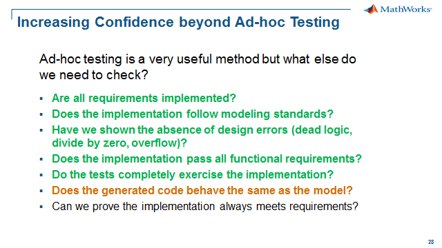
Now that we have gone through examples on how to perform various verification and validation activities on our model, let’s move to code generation and source code unit testing.
Equivalence testing is a method to compare the behavior of your model to the behavior of your generated code. Software-in-the-Loop (SIL) testing is a method to ensure the behavior of the generated code, compiled for the host, matches that of the model. This verification technique is built into Simulink such that you easily can rerun all the test cases used for the model on the generated source code. This increases confidence in your design and reliability to your development process.
We could also extend the idea of SIL to Process-in-the-Loop (PIL), in which case we would compile the code and run it either in an IDE or on a target processor. This verification technique is also built into Simulink such that you can automatically call 3rd party IDEs and compilers to build, download and execute the generated source code on the target processor. PIL is often required for compliance with functional safety standards like IEC 61508, ISO 26262, EN 50128, etc.
Below is a summary of the equivalence testing for code verification:
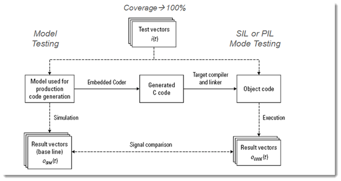
Verification and Validation Tools Used
- Simulink Test
- Simulink Verification & Validation (code coverage)
- Embedded Coder
Equivalence Testing -- Model vs Code Outputs & Coverage
Before performing the Software-in-the-loop (SIL) verfication, in a previous step we verified the model behavior against the expected behavior as defined in the requirements. The verification was based on comparing the implementation outputs against the expected requirements based outputs. In addition we generated additional test cases to add to the requirement based test cases to have 100% model coverage.
This step will verify our code matches our model behavior by reusing the model testing assets like the test inputs, expected outputs and the associated test harnesses. We will rerun the model test cases on the implementation in SIL mode meaning a code based version of our implementation model. We will check the code outputs against the expected outputs and look for missing coverage in the code. Missing code coverage may indicate the code generatation has introduced unintended functionality in the code as compared to the model. Our starting point is a set of test cases that verified the model, fulfills requirements and has 100% model coverage.
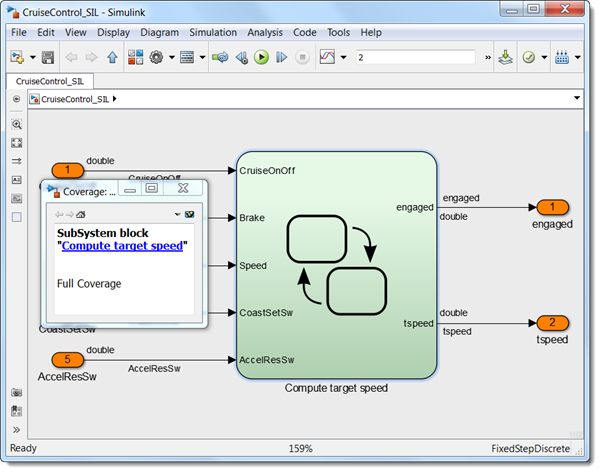
If you haven't performed "Step 5: Test Case Generation" then you'll need to do that now through the section "Run Full Coverage Test Cases in Simulink Test". This will provide the full model coverage test cases needed for the code equivalence testing.
To verify the code, do the following:
1. With the existing Simulink Test, Test Manager configuration file named "topItOff", copy the test suite and rename to "Test_Suite_SIL".
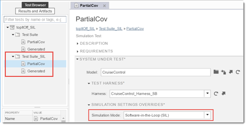
2. To enable SIL mode, for each test case the Simulation Mode needs to be set to Software-in-the-Loop(SIL).
The test cases are now configured to run on the generated component code. At the start of each test case execution, Embedded Coder will generate the code so the harness will now be executing the generated code instead of the model.
We will be reusing the model testing assets: test inputs, baselines and harnesses. are all being reused from the model testing. As an example the "Partial_Cov" test case in both suites are using the same test harness.
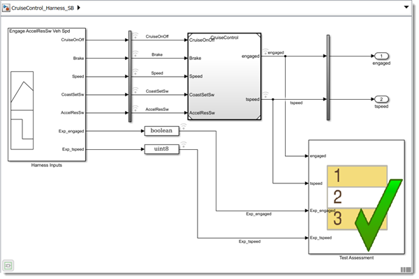
3. Run the tests at the "TestSuite_SIL" level.
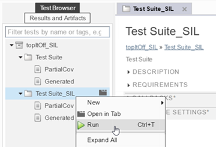
In the Test Manager, the results show all test cases pass.
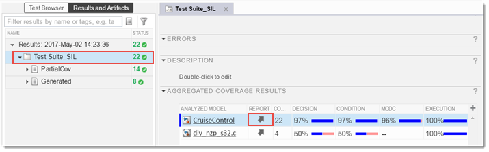
All of same test cases used on the model were executed on the generated code. The code is compiled and executed during the running of the test cases. Also ruring simulation we are using "Test Assessment" block to verify that the outputs from the generated code matches the expected outputs for functional test cases. And the generated test cases are using model outputs as the expected outputs to check against the generated code.
As before, the coverage report is opened by selecting the "arrow" in the "Report" column. This time instead of a model coverage report we now have a code coverage report. Note that no additional settings were required between the model and code testing to enable the code coverage measurement.
The model vs code coverage differences is way to check for any unintended functionality that may have been introduced by the code generation process.
The code generation includes "divide by zero protection" code that is not fully covered and not represented in the model.
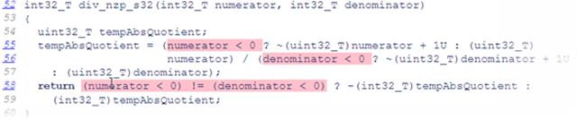
State chart differences include protection for unsigned 32-bit integer overflow for the "tick counter". Again not represented in the model and it would be a very long test case to obtain 100% coverage!
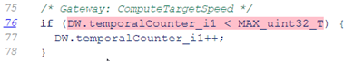
For this difference we will use the coverage filter to exclude this check from the results.
4. Click on the code line number hyperlink to navigate to the detail in the report.
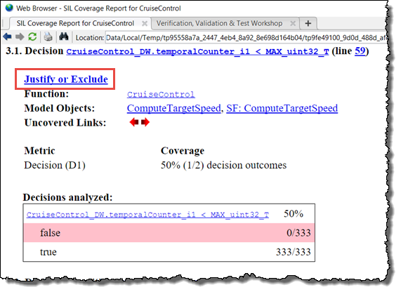
5. Click on Justify or Exclude to bring up the Coverage Results dialog. Optionally you can add a "Rationale" like "Condition will never be false during operation."
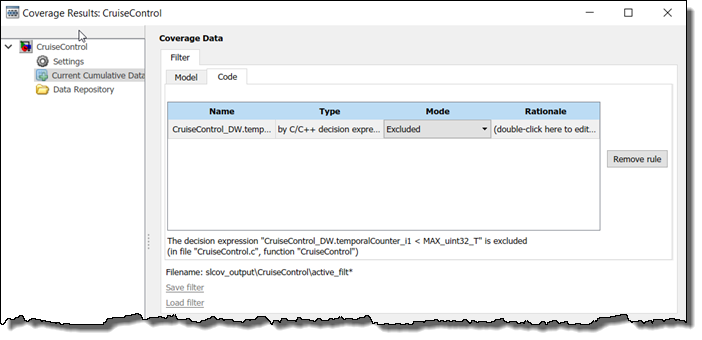
6. Return to the report and exclude the next (2) uncovered expressions.
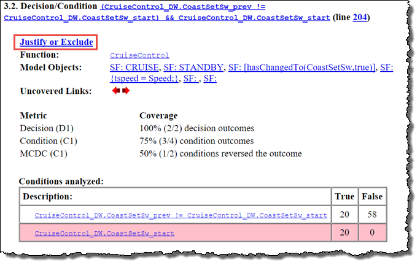
The condition "CruiseControl_DW.CoastSetSw_start" is the result of how the "hasChanged" transition is auto-coded as (2) separate conditions. This can be justified as a code generation artifact.
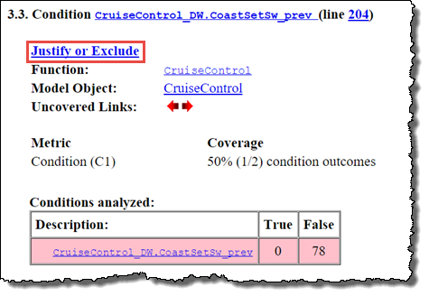
The condition "CruiseControl_DW.CoastSetSw_prev" is partly due to the "hasChanged" autocoding and how code coverage considers the boolean variable a condition by itself. Again this can be justified as a code generation artifact with no functional impact.
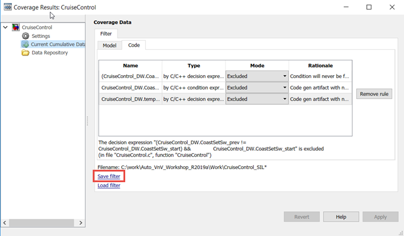
7. From the Coverage Results dialog select Apply and Save filter. Save the filter as "CruiseControl_SIL.cvf" and then close the Coverage Results dialog.
8. Return to the Test Manager and navigate to the "Test Suite_SIL" COVERAGE SETTINGS. Enter the Coverage filter filename as "CruiseControl_SIL.cvf".
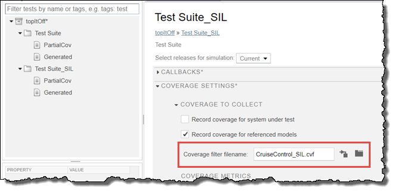
9. Re-execute the test cases to show (100%) coverage for the CruiseControl generated code.

Source Level Debugging
This step may be instructor led since it requires Visual Studio. If you have Visual Studio then please execute the steps described below on your computer.
To further analyze code vs model differences or code execution issues, Embedded Coder has an integrated debugging capability to enable the usage of the Visual Studio environment to analyze/debug issues while running a SIL mode simulation.
To enable this functionality:
1. Open the CruiseControl_VS_Adhoc_Harness.slx model – click here.
2. Select Code/C/C++ Code/Code Generation Options...
3. Navigate to Code Generation/Verification
4. Select Enable source-level debugging for SIL
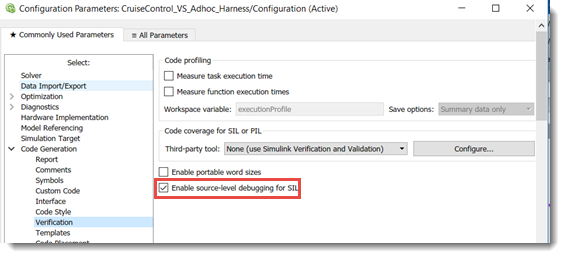
To perform the source level debugging:
6. Click Run simulation to begin execution
Once the code generation and build for the SIL block has been completed the simulation will begin with a breakpoint in "initialize" and then after a continue the simulation will encounter the "step" breakpoint function.
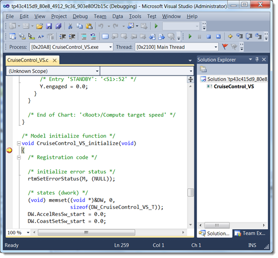
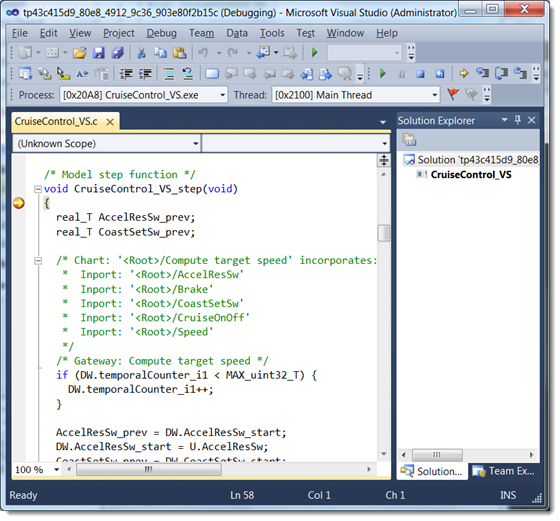
Use the Visual Studio debugging options to continue the simulation, add more breakpoints and watch variables. You can also click on a transition in the state chart and navigate to the code to know where to set a breakpoint in the code for a particular transition.
Let's add a few breakpoints in the code and test with our dashboard:
7. Set a breakpoint at line #114 to test the Brake after the Cruise Control is engaged.
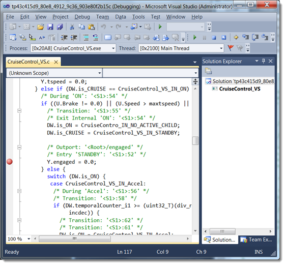
8. Set a breakpoint at line #216 to test the tspeed is being set properly when going from disengaged to engaged with CoastSetSw.
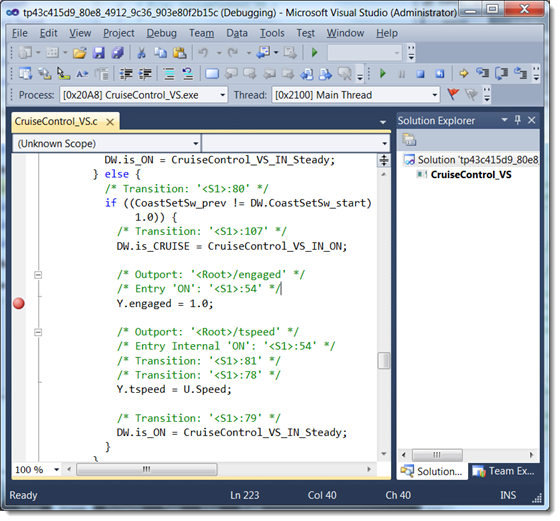
Testing Hand Code with Simulink Test
Hand code may be tested with Simulink Test. The methods used on the model and the generated code may also be applied to hand code. The main feature supporting this workflow is the "C Caller" block that allows hand code to be executed in the model environment.
The hand code in the example was based on the generated code and then modified to appear more like hand code. The was done to allow for the reuse of the test assets we used in the previous steps.
To examine the hand code version of the Cruise Control function – click here.
To use this functionality:
1. Open the "CruiseControl_C_main.slx" model – click here.
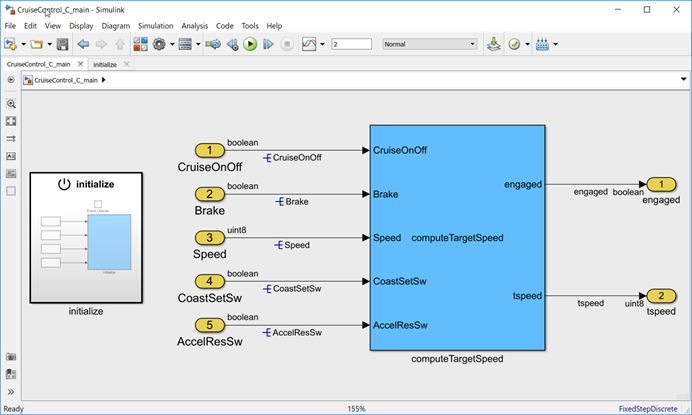
In the "CruiseControl_C_main.slx" model are (2) C Caller blocks used to execute the Cruise Control hand code:
- An "Initialize" block to call the "Initialize" function to set the calibration parameters in the hand code
- A "ComputeTargetSpeed" to call the "ComputeTargetSpeed" function periodically to set the target speed and engaged status based on the driver and vehicle inputs.
2. Open the "initialize" block in the main model and double-click the "initialize" block in the subsystem to open the Block Parameters: initalize dialog.
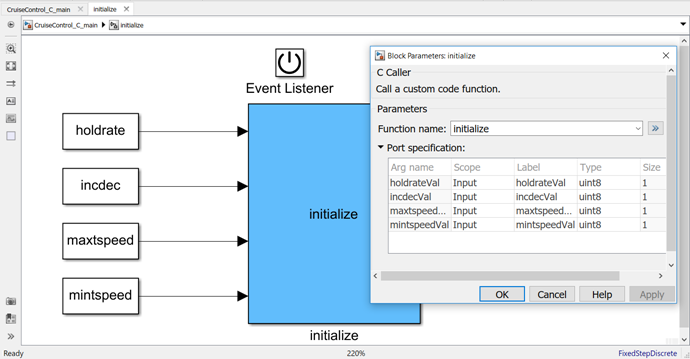
The C Caller block has been configured to call the "initialize" function in the hand code. The function prototype has been used to configure the block with inputs for the calibration parameters.
3. Return to the top model and double-click the "ComputeTargetSpeed" block top to open the *Block Parameters: ComputeTargetSpeed" dialog.
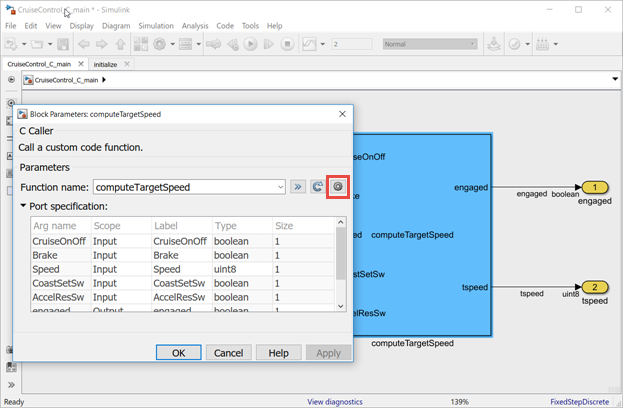
This C Caller block has been configured to call the "ComputeTargetSpeed" function in the hand code. The function prototype has been used to configure the block with the same inputs and outputs as the model version of the Cruise Control.
4. Select the "configuration" icon to open the model configuration associated with integrating hand code for use in the C Caller block.
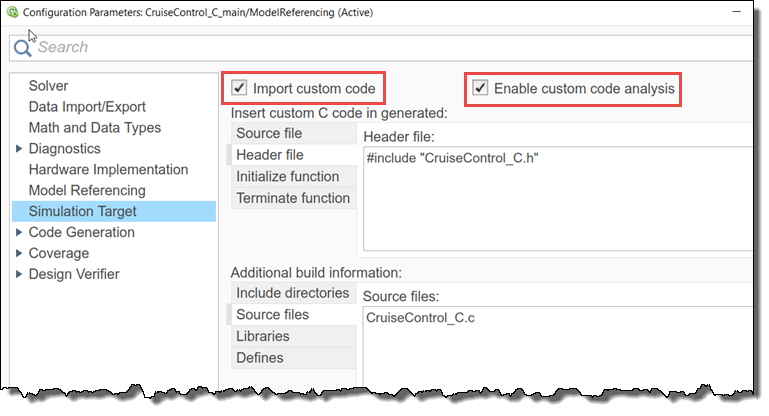
In the configuration, the header and source file has been entered for hand code version of the CruiseControl. Note the (2) checkboxes that need to be selected for successful usage.
5. Return to the Test Manager and select the "C_Code_Test" to examine the test case for the C Caller block. The configuration is the same as testing any model with the main model specified as "CruiseControl_C_main" that uses the same type of Signal Builder harness that we used in the previous steps.
6. Run "C_Code_Test" and navigate to the results.
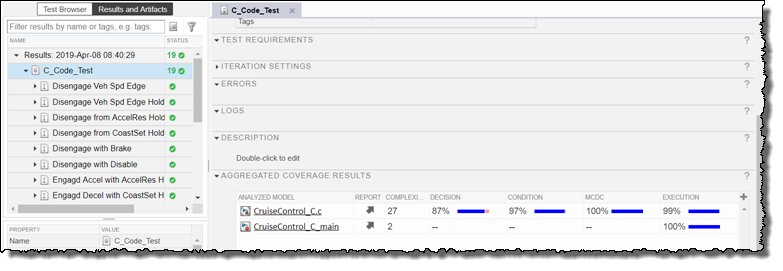
The results show the hand code version is functionally equivalent to the model version since we ran the same test cases from the earlier model testing.
7. Click on the Report for "CruiseControl_C.c" to examine the code coverage results in detail.
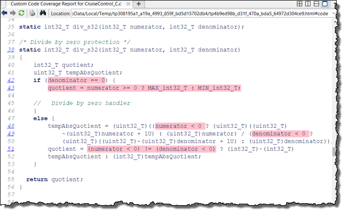
From the report the only code not fully covered is the "div_s32", divide by zero protection. We will exclude this function by confirming this has been fully tested by previous means.
8. Configure the test case to use the coverage filter "CruiseControl_C.cvf".
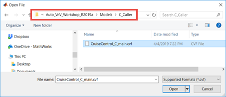
9. Run the test.
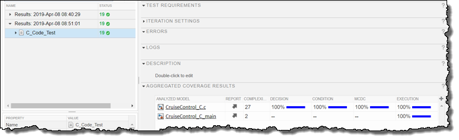
Summary
In this method we have shown a code verfication workflow:
- Re-used a test harness with 100% model coverage input test vectors
- Configured our implementation to run in Software-in-the-loop (SIL) mode
- Successfully compared SIL implementation outputs to the same model expected outputs
- Found minimal model coverage to code coverage differences and used a coverage filter to account for the differences
- Demonstrated how to debug source code in Visual Studio as another way to understand other differences
- Introduced the use of C Caller blocks to execute tests on hand code based on a similar workflow
The Code Verification step of the process is about having confidence in our generated code by showing the code behavior matches the model behavior. The design issues were found earlier in the model verification tests. The code verification was shown to be tightly integrated with the code generation tool enabling minimal setup, high re-use of model test assets and easy execution/evaluation. We will answer the last question in the next step as we build upon our structured and formal testing framework for securing the quality, robustness and safety of our cruise controller.
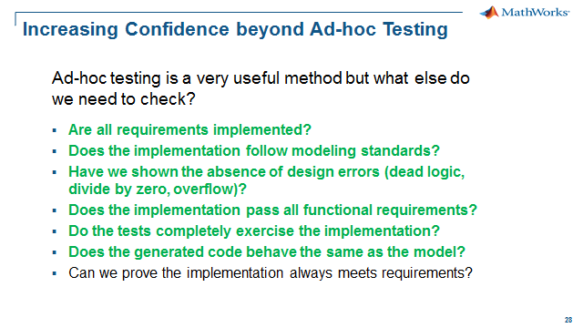
When you are finished, close all models and files - or click here.
Please go to Step 7: Integrated Code Verification - click here.